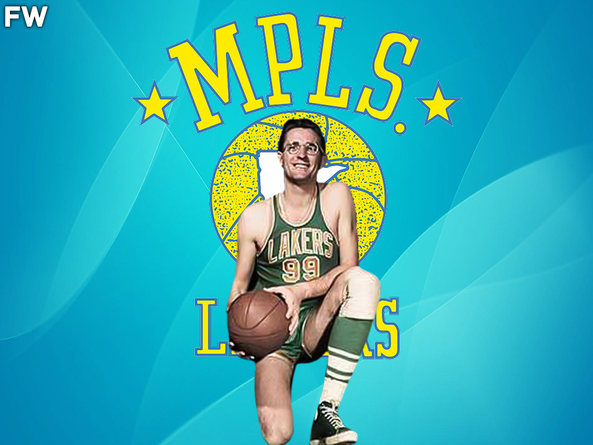
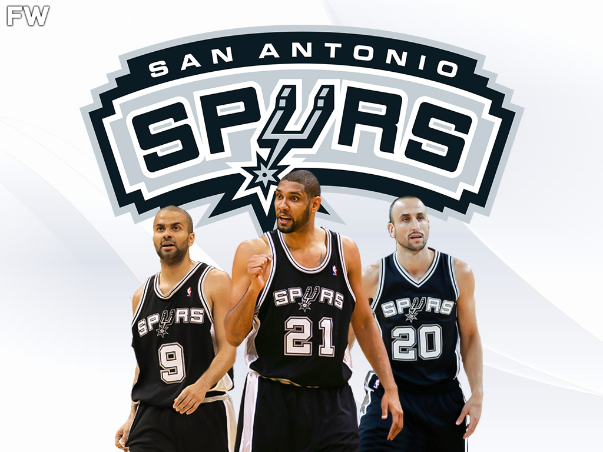
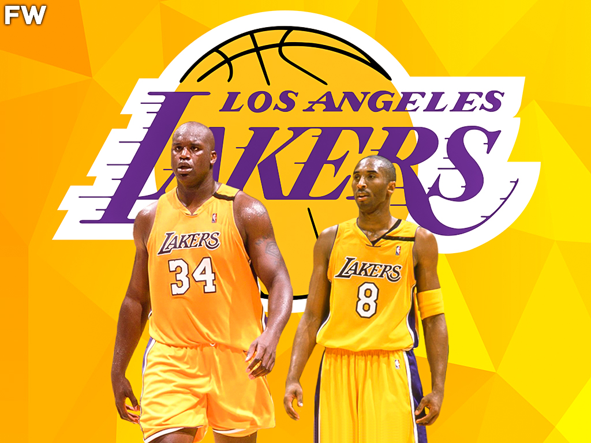
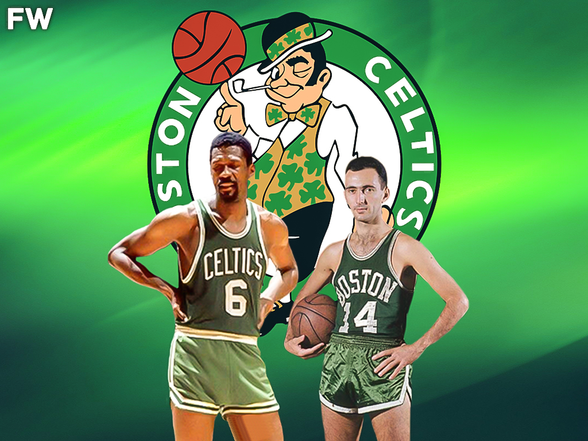
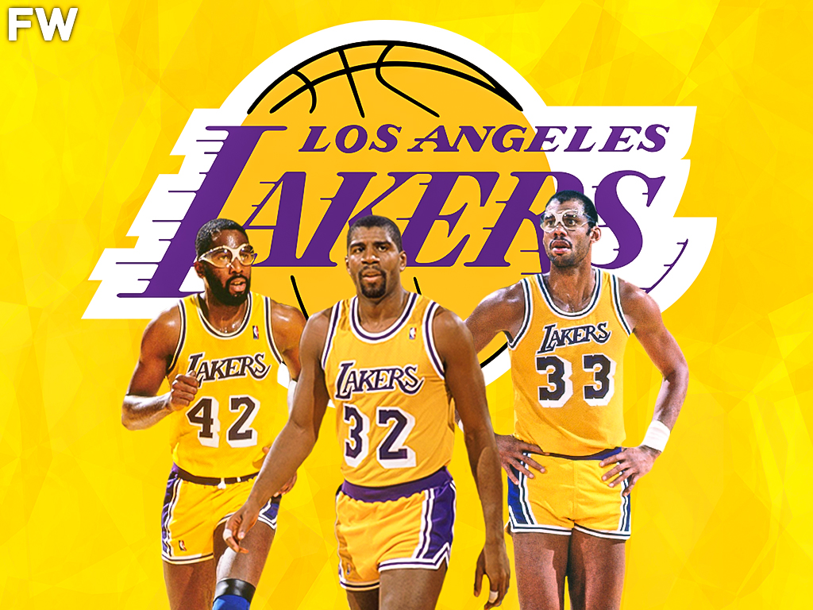
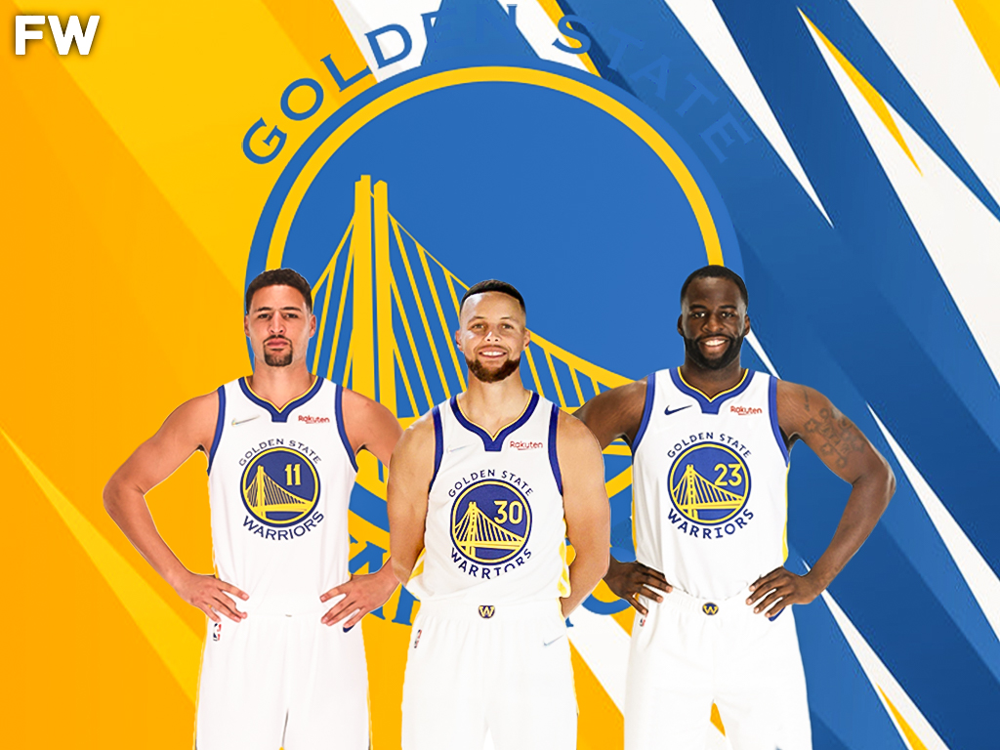
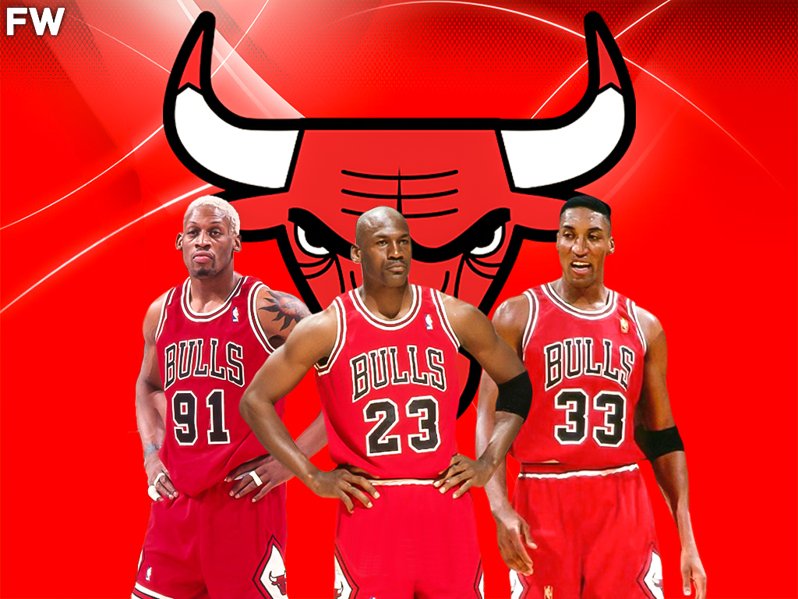

To be a dynasty in the NBA, there are many factors that need to be included. First and foremost, winning NBA championships is the biggest factor in achieving dynasty status. Winning just one championship will not do. Teams must be able to win multiple times within a certain period of time to be considered a dynasty. This is the reason you will not hear every NBA champion that goes back-to-back be considered a dynasty. A perfect example of this is the 1988-1990 Detroit Pistons. Sure, they went back-to-back in 1989 and 1990, but the loss in 1988 and failure to win again after 1990 disqualifies them as a dynasty.
The dynasties below are considered to be among the best teams in NBA history. Led by some of the greatest players in the game, these teams rose to the top of the proverbial mountain on numerous occasions in a short period of time. In some cases, the dynasty lasted over 5 seasons. For others, it was short-lived but still dynastic in nature. We will rank these teams based on a variety of factors to be explained as we go. Regardless of where they come in on the list, these teams are the ones that will forever stand out as the greatest in NBA history.
Rules
1. A team automatically qualifies if they have three-peated as NBA champions
2. A team automatically qualifies if they won 4 or more NBA Finals within a 10-year span
3. A team automatically qualifies if they have won 3 titles and advanced to 5 NBA Finals in a 10-year span
Minneapolis Lakers
NBA Championships – 5 (1949, 1950, 1952, 1953, 1954)
NBA Finals: 5 (1949, 1950, 1952, 1953, 1954)
Dynasty Years: 6 (1949-1954)
The Minneapolis Lakers during the late 40s and early 50s are the first of 3 appearances by the Lakers franchise on this list. The fact that a team won 5 titles in 6 seasons is ranked the lowest of all the dynasties in NBA history is sure to raise some questions considering they accomplished the same things the Showtime Lakers did. The state of competition just wasn’t the same during Minneapolis’ run, with just 9 teams in the league by the time they won their 5th NBA title.
The 1949 championship was the first title for Minneapolis on their dynastic run led by one of the greatest centers in NBA history, George Mikan. This championship is technically one that was won during the years the league was known as the BAA but is still recognized by the NBA as a title. With no stats other than points recorded, Mikan led the way for the Lakers with 27.5 PPG in the series, which they took in 6 games over the Washington Capitols. Herm Schaefer and Jim Pollard also contributed over 12.0 PPG in the championship series.
The following season, the Lakers found themselves in the NBA Finals once again, this time against the Syracuse Nationals led by Dolph Schayes. The Nationals had 4 players average double figures for the Finals, led by Schayes’ 17.3 PPG. This was not enough to stop the incredible display by George Mikan, who set the tone early with 37 points in a Game 1 win. For the series, Mikan averaged 32.2 PPG while Pollard added 13.7 PPG, and Vern Mikkelsen added 12.5 PPG. Milan had 40 points in the Game 6 closeout game but was not rewarded Finals MVP due to the award being nonexistent at the time.
After 1951 saw the Lakers fail to make the Finals, they found themselves right back in the mix of things in 1952. The 1952 Finals saw the Lakers take on the New York Knicks. This series would be a battle from start to finish as it headed to 7 games. Mikan closed the door on the Knicks in Game 7 with 22 points and 19 rebounds to deliver their 3rd title. Mikan would lead the Lakers over the Knicks once again in 1953 with 20.7 PPG in the Finals as they dominated the Knicks in 5 games.
The Minneapolis Lakers’ final championship of their dynasty run came in 1954. After sweeping the first round Round Robin and defeating the Rochester Royals in the Western Division Finals, the Lakers set themselves up with a date with the Syracuse Nationals in the Finals. Once again, the series was a great one, going to 7 games to determine a winner. The Lakers won Game 7 behind 21 points from Jim Pollard and 15 rebounds from Mikan. Four different Lakers finished in double figures for the series, with Mikan leading the way with 18.1 PPG.
Boston Celtics

NBA Championships: 3 (1981, 1984, 1986)
NBA Finals: 5 (1981,1984, 1985, 1986, 1987)
Dynasty Years: 7 (1981-1987)
The Boston Celtics during the 1980s were one of the best teams ever assembled. They were led by the Big 3 of Larry Bird, Kevin McHale, and Robert Parish, along with some of the best role players in the NBA at the time. They appeared in 5 different NBA Finals during the decade and took home 3 NBA championships. Their first NBA title came in 1981 when they took on Cinderella story Houston Rockets.
In Games 1 and 2 of the series, Larry Bird set the tone with back-to-back games of 21 rebounds. The teams split those games and moved the series to a best of 5 series. The two teams would also split the next 2 games, which made Games 5, 6, and 7 what was needed to find a winner. The Celtics took the following 2 games, and their first NBA championship since John Havlicek graced the hardwood. Cedric Maxwell was named Finals MVP with 17.7 PPG and 9.5 RPG, but the best player on the court was Larry Bird, who finished the series with 15.3 PPG, 15.3 RPG, 7.0 APG, and 2.3 SPG.
The Celtics would not get back to the NBA Finals until 1984, but once they did get back there, they went to 4 straight. In 1984, the Celtics and Larry Bird were set to take on their heated rivals, Magic Johnson and the Los Angeles Lakers. The series was grueling, with Magic and Bird battling for 7 games to determine an NBA champion. The two teams battled to a 7th game with 48 minutes to determine the champion of the world. In Game 7, Robert Parish, Larry Bird, and Dennis Johnson all went for 20 points or more to deliver Boston’s 2nd title with a 111-102 win. Larry Bird was named the Finals MVP with 27.4 PPG and 14.0 RPG.
The Lakers would get their revenge the following season, defeating Boston in 6 games to take back the NBA hardware. The Celtics were not done with their run just yet. They found themselves back in the NBA Finals once more in 1986 against the Houston Rockets, just as they did in 1981. This time, the Rockets were powered by Hakeem Olajuwon and Ralph Sampson, who formed the Twin Towers. Olajuwon was amazing in the series, with 24.7 PPG, 11.8 RPG, 2.3 SPG, and 3.2 BPG. However, it wasn’t enough to stop the Celtics.
The Celtics grabbed Game 1 with 20-point nights from Bird, McHale, and Parish, getting the most from their Big 3 to start the series. They took Game 2 in blowout fashion behind 31 points from Bird and 25 points from McHale. After dropping Game 3 in Houston, Boston bounced back in Game 4 with a 106-103 victory. They would lose Game 5 to make it a 3-2 series lead. Boston would not let the series slip away and destroyed the Rockets in Game 6 by way of 114-97. Once again, Larry Bird was named Finals MVP with 24.0 PPG, 9.7 RPG, 9.5 APG, and 2.7 SPG.
San Antonio Spurs
NBA Championships: 4 (1999, 2003, 2005, 2007)
NBA Finals: 4 (1999, 2003, 2005, 2007)
Dynasty Years: 9 (1999-2007)
During the late 90s and early 2000s, the Spurs went from a relatively unknown franchise to one of the best in NBA history. Led by stars such as Tim Duncan, Tony Parker, and Manu Ginobili, the Spurs made their way to 4 NBA Finals between 1999 and 2007, winning all 4 series and cementing themselves as one of the best teams in NBA history. As the David Robinson years came to an end, the Tim Duncan years began, and with it came massive success.
In 1999, the defensive duo of David Robinson and Time Duncan led the San Antonio Spurs to an 11-1 record in the NBA playoffs en route to their first NBA Finals berth. There, they would take on the New York Knicks, who were a Cinderella story of their own. The Spurs would absolutely dominate the Knicks in the Finals, winning the series in 5 games over New York. David Robinson was still playing great basketball and finished the series with 16.6 PPG, 11.8 RPG, and 3.0 BPG. Tim Duncan was named Finals MVP with 27.4 PPG, 14.0 RPG, 1.0 SPG, and 2.2 BPG.
The Spurs would take a brief hiatus from the NBA Finals due to the dominance of the Lakers at the time. In 2003, the Spurs would make the NBA Finals once more, this time against the New Jersey Nets. Tim Duncan had the best Finals series of his entire career in 2003, which included a near triple-double in the series decisive Game 6. Duncan and the Spurs shit down the Nets in 6 games with Duncan’s second Finals MVP performance. For the series, Duncan averaged 24.2 PPG, 17.0 RPG, 5.3 APG, 1.0 SPG, and 5.3 BPG. Spurs teammates Tony Parker, David Robinson, and Stephen Jackson all averaged double-digits in scoring for the series.
The Spurs would go on to win 2 of the next 3 NBA championships. In 2005, the Spurs advanced to the NBA Finals against the defending NBA champions, the Detroit Pistons. The series was war, with it going 7 games between 2 immensely successful defensive teams. The Spurs would win Game 7 by a score of 81-74 to take their 3rd NBA title. Duncan had 25 points and 11 rebounds in Game 7, while Manu Ginobili added 23 points. Once again, Duncan was the Finals MVP with 20.6 PPG, 14.1 RPG, and 2.1 BPG.
Although it would be the final year that their dynasty made the NBA Finals, 2007 would not be the Spurs’ final time winning an NBA championship. In 2007, the Spurs would make their 4th NBA Finals in 9 seasons against a young Lebron James and the Cleveland Cavaliers. The Spurs would make quick and swift work of the Cavaliers, sweeping them in 4 games for their 4th NBA title. This time, Tony Parker would be named the Finals MVP with 24.5 PPG, 5.0 RPG, and 3.3 APG.
Los Angeles Lakers
NBA Championships: 3 (2000, 2001, 2002)
NBA Finals: 4 (2000, 2001, 2002, 2004)
Dynasty Years: 5 (2000-2004)
The Los Angeles Lakers are one of the most dominant yet short-lived dynasties in NBA history. This team is also one of the most loved teams in NBA history, given the leadership of Shaquille O’Neal and a young Kobe Bryant beginning to make his way up the NBA hierarchy. During this time, Shaq was the most unstoppable force in the NBA, winning an MVP and all 3 Finals MVPs from 2000-2002. O’Neal’s runs catapulted him into the Top 10 of all-time conversations, and he even made a case for the Top 5 at one point.
The Lakers made their way to their first NBA Finals since 1991 in 2000 on the backs of an MVP season from O’Neal. After close series in both their first-round matchup and Western Conference Finals, the Lakers found themselves going against the Indiana Pacers in the NBA Finals. O’Neal was out of this world in the series, going for over 40 points and 19 over 18 rebounds in each contest. O’Neal would lead the series every game in scoring and go on to win the Finals MVP award. He averaged 38.0 PPG, 16.7 RPG, and 2.7 BPG. Bryant, Glen Rice, and Ron Harper were the only other Lakers to average 10.0 PPG or more.
The 2001 season is one of the most overwhelming playoff runs by a team ever. After going 56-26 in the regular season, the Lakers steamrolled the competition in the playoffs, not losing one game to earn their spot in the Finals. The Lakers would drop Game 1 of the Finals due to the barrage of scoring from league MVP Allen Iverson and the Philadelphia 76ers’ defense. The Lakers would not lose another game on the backs of Shaq and Kobe, winning the series in 5 games. O’Neal was Finals MVP once again with 33.0 PPG and 15.8 RPG, while Bryant contributed with 24.6 PPG, 7.8 RPG, 5.8 APG, 1.4 SPG, and 1.4 BPG.
The entire NBA world was out to dethrone the Lakers in 2003 and prevent just the 2nd three-peat over the past 56 years, the other being the Michael Jordan-led Bulls. In the 2003 Finals, the Lakers would meet the New Jersey Nets led by Jason Kidd. The Nets proved to be no match for the duo of Kobe and Shaq as they were swept in 4 games. Shaq would win his 3rd Finals MVP in a row averaging 36.3 PPG and 12.3 RPG. Bryant averaged 26.8 PPG, 5.8 RPG, 5.3 APG, and 1.5 SPG. The Lakers would be dethroned in 2004 by the Detroit Pistons in a massive upset.
Boston Celtics
NBA Championships: 11 (1957, 1959, 1960, 1961, 1962, 1963, 1964, 1965, 1966, 1968, 1969)
NBA Finals: 12 (1957, 1958, 1959, 1960, 1961, 1962, 1963, 1964, 1965, 1966, 1968, 1969)
Dynasty Years: 13 (1957-1969)
How can a team who won 11 NBA championships in 13 seasons not be considered the greatest dynasty of all time? Well, during most of the Boston Celtics NBA championships, the NBA only consisted of 8 teams, and by 1970, there were only 14. Call me crazy, but I find it much more difficult to beat out 30 teams than 14. This is no disrespect to pioneers of the game like Bill Russell and Bob Cousy, but that is just the way things fall on this list.
Many fans and analysts point to the arrival of Bill Russell as the catalyst for Boston’s success during this time. Russell’s presence was made possible by one of the most lopsided trades in NBA history created by Red Auerbach. They would be right in that assessment but he was not the only factor that helped the Celtics become the greatest dynasty the NBA had ever seen at the time. Bob Cousy was known as the Houdini of the Hardwood for his innovative ways of handling and passing the ball. Sam Jones was one of the elite players in the NBA at the time, which can also be said about Bill Sharman and Tommy Heinsohn.
The Celtics won their first NBA title in 1957, which was Bill Russell’s rookie season. Russell led the NBA in rebounds that season with 19.6 RPG, something he would do over the next 5 seasons as well. Russell and the Celtics would win the 1957 NBA Finals over Bob Pettit and the St. Louis Hawks in 7 games. They would drop the 1958 NBA Finals to the same Hawks team, marking the only loss for the Celtics in the Finals over the next decade.
After losing in 1958, the Celtics would go on the greatest run for any team in NBA history. The team would win 8 straight NBA Finals from 1959 through 1966. In Russell’s 70 career NBA Finals games, he averaged 16.4 PPG and an incredible 24.5 RPG. Russell is always cited for being a lesser scorer than most of his peers, yet that wasn’t a part of his game. Russell is rightfully known as a Top 2 rebounder and Top 2 defender in NBA history, given his ability to even suit down the game’s greatest guards at the time. Russell could perhaps have 10 Finals MVPs in his career if the award had been created when he played, but I guess having the award named after you is a decent consolation.
As I referred to earlier, the Celtics had more than just Russell to thank for their NBA championships. Bob Cousy participated in 6 of their NBA title series’ and 7 overall. In 42 career Finals games, Cousy averaged 17.0 PPG, 5.0 RPG, and 9.5 APG. Sam Jones played 64 Finals games in his career and averaged 17.9 PPG and 4.9 RPG as a member of 10 NBA championship teams. The 60s Celtics are surely one of the greatest dynasties in NBA history, but they are lower on this list only due to the lack of competition during their run.
Los Angeles Lakers
NBA Championships: 5 (1980, 1982, 1985, 1987, 1988)
NBA Finals: 8 (1980, 1981, 1982, 1983, 1985, 1987, 1988, 1989)
Dynasty Years: 10 (1980-1989)
The Showtime Lakers are one of the most loved teams in NBA history. Led by the wizardry of Magic Johnson and the dominance of Kareem Abdul-Jabbar, the Lakers would advance to 8 NBA Finals during the 1980s and win 5 NBA championships along the way. Of course, the Lakers had a tremendous supporting cast that helped them win, including the likes of James Worthy and Michael Cooper.
The first of their 5 NBA titles during the decade came when their floor general was still just a pup by NBA standards. As a rookie, Magic Johnson led the Lakers to the NBA Finals against the Philadelphia 76ers. With an injury keeping Kareem sidelined for Game 6, Magic stepped in as the starting center. He delivered one of the greatest Finals performances ever with 42 points, 15 rebounds, and 7 assists to win Finals MVP and deliver the Lakers an NBA championship.
The Lakers failed to advance to the NBA Finals in 1981 and had to watch their rivals, the Celtics, win an NBA championship from home. Los Angeles would make their way back to the NBA Finals in 1982, once again against the 76ers. The Lakers played a complete team game to capture the championship in 6 games, with Magic winning Finals MVP with 16.2 PPG, 10.8 RPG, and 8.0 APG. 4 other players averaged at least 15.0 PPG in the series, including Norm Nixon, Kareem, Bob McAdoo, and Jamaal Wilkes.
The Lakers would be swept by the 76ers and Moses Malone in 1983, giving them a 2-2 NBA Finals record for the decade. The next time they would be victorious in the Finals would be in 1985 against the Celtics, who had knocked them off the previous year. This time, the Lakers would win in 6 games, with Kareem taking home the Finals MVP hardware. He averaged 25.7 PPG, 9.0 RPG, 1.0 SPG, and 1.5 BPG for the series. James Worthy also contributed 23.7 PPG, while Magic averaged 18.3 PPG and 14.0 APG.
The Lakers’ final two NBA championships in the decade would come in 1987 and 1988. Once again, the Lakers found themselves across from their rival, the Boston Celtics, and once again were victorious in 6 games. Magic Johnson would win his 3rd Finals MVP award with 26.2 PPG, 8.0 RPG, and 13.0 APG. The Lakers won their 5th NBA title of the 80s the following season over one of the most hated teams in NBA history, the Bad Boy Detroit Pistons. The series went 7 games, with James Worthy closing out the series in Game 7. He was named Finals MVP after a Game 7 performance of 36 points, 16 rebounds, and 10 assists. The Lakers would lose the 1989 Finals to the Pistons in a 4-game sweep.
Golden State Warriors
NBA Championships: 4 (2015, 2017, 2018, 2022)
NBA Finals: 6 (2015, 2016, 2017, 2018, 2019, 2022)
Dynasty Years: 8 (2015-2022)
The most recent example of a dynasty in the NBA is what the Golden State Warriors have done since 2015. Among all of the success, Stephen Curry emerged as the greatest shooter in basketball history and one of the greatest point guards of all time. The core group of Curry, Draymond Green, and Klay Thompson meshed perfectly in Steve Kerr’s system to become an almost unbeatable team that also included a 73-9 regular season record in 2016.
The Warriors burst onto the scene in 2015 behind an MVP season by Stephen Curry. The Warriors advanced to the NBA Finals to play against LeBron James in his first season back with the Cleveland Cavaliers. The Warriors put the Cavaliers away in 6 games behind great defensive efforts from Andre Iguodala (who was named Finals MVP) and Draymond Green. Curry provided the offensive firepower with 26.0 PPG, 6.3 APG, and 1.8 SPG and 3 other players finished with double-digit scoring performances. This includes Iguodala, Klay Thompson, and Draymond Green.
The Warriors burst onto the scene in 2015 behind an MVP season by Stephen Curry. The Warriors advanced to the NBA Finals to play against LeBron James in his first season back with the Cleveland Cavaliers. The Warriors put the Cavaliers away in 6 games behind great defensive efforts from Andre Iguodala (who was named Finals MVP) and Draymond Green. Curry provided the offensive firepower with 26.0 PPG, 6.3 APG, and 1.8 SPG and 3 other players finished with double-digit scoring performances. This includes Iguodala, Klay Thompson, and Draymond Green.
The Warriors showed no signs of slowing down in 2018 as they returned the same championship team to the court. Once again, the Warriors found themselves up against the Cavaliers and LeBron James for the 4th year in a row. This series was even less competitive than in 2017, as the Warriors swept the Cavaliers in 4 games. Durant was once again named Finals MVP with 28.8 PPG, 10.8 RPG, and 7.5 APG. The Warriors had won their 3rd championship in 4 seasons, making them a dynasty by 2018. In 2019, the Warriors would advance to the NBA Finals for the 5th season in a row, but injuries to Klay Thompson and Kevin Durant derailed their chance at a 3-peat.
For a few seasons, experts, media pundits, and fans all proclaimed the Warriors’ dynasty to be dead. Even as they looked back to normal amid devastating injuries, no one was buying them as a team capable of winning the NBA championship. They were out to prove the haters wrong as they advanced to the NBA Finals for the 6th time in 8 seasons. The Warriors would take on the Boston Celtics and would end up wrapping things up in 6 games. It would be the culmination of Curry’s career as he finally grabbed that elusive Finals MVP with an all-time great Finals series. He averaged 31.2 PPG, 6.0 RPG, 5.0 APG, and 2.0 SPG to win the award and shot 43.7% from three and 48.2% overall.
Chicago Bulls
NBA Championships: 6 (1991, 1992, 1993, 1996, 1997, 1998)
NBA Finals: 6 (1991, 1992, 1993, 1996, 1997, 1998)
Dynasty Years: 8 (1991-1998)
The dynasty that we have chosen as the greatest in NBA history is the Chicago Bulls of the 1990s. The Bulls were led by the GOAT Michael Jordan, Scottie Pippen, Horace Grant, Dennis Rodman, and many more on their path to 6 NBA titles in 8 seasons from 1991 through 1998. For years, Michael Jordan and the Bulls were brutalized for most of the 1980s and some of the early 90s, consistently getting bounced from the playoffs in early rounds and physically beaten to a pulp. Once he got a taste of winning, however, he could not let it go.
After years of losing and coming up short, Michael Jordan and the Bulls finally conquered the Pistons in the 1991 playoffs. They were rewarded with a berth in the NBA Finals, where they would take on another powerhouse of the 80s, the Los Angeles Lakers. Jordan and the Bulls decimated the Lakers in 5 games behind Jordan’s Finals MVP performance of 31.2 PPG, 6.6 RPG, 11.4 APG, and 2.8 SPG. Scottie Pippen was a 20.0 PPG scorer, while Horace Grant and John Paxson also contributed over 13.0 PPG each.
The Bulls would once again advance to the NBA Finals in 1992 against the Portland Trail Blazers. Media pundits compared Clyde Drexler to Jordan before the series, claiming that he was on the same level or better than MJ. Jordan did not like the comparisons and punished Portland in the Finals. The Bulls defeated the Trail Blazers in 6 games, with Jordan claiming his 2nd straight Finals MVP with 35.8 PPG, 6.5 APG, and 1.7 SPG on 52.6% shooting. You would think they were done, but that was not the case.
For their 3rd NBA championship in a row, the Bulls were set to take on MVP Charles Barkley and the Phoenix Suns in the NBA Finals. What came next was one of the greatest Finals performances in NBA history. Jordan and the Bulls would defeat the Suns in 6 games, just as they did in Portland the year before. Jordan was named Finals MVP for the 3rd year in a row averaging 41.0 PPG, 8.5 RPG, 6.3 APG, and 1.7 SPG. After the Finals, Jordan would retire amid his father’s untimely death.
The next time we saw Jordan was for 17 games to end the 1995 season and for the playoff run in which they lost to Orlando. They added Dennis Rodman going into the 1996 season to combat the issues they had with size in the paint. Jordan and the Bulls headed back to the NBA Finals in 1996 against Gary Payton, Shawn Kemp, and the Seattle SuperSonics. It was a grueling series for Jordan as he claimed his 4th title and 4th Finals MVP award in 6 years. He averaged 27.3 PPG in the series on 41.5% shooting from the field.
Over the next 2 seasons, Michael Jordan and the Chicago Bulls would meet Karl Malone, John Stockton, and the Utah Jazz twice in the NBA Finals. Many thought that the Jazz had what it took to knock off the Bulls finally and restore balance to the NBA. They thought wrong. Jordan would dismiss the Jazz in both 1997 and 1998, three-peating for the second time in the same decade. This is amazing, considering only 3 teams have 3-peated in the past 56 years, and Michael Jordan’s Bulls are two of them. Over his 2 Finals against the Jazz, Jordan was his 5th and 6th Finals MVP awards averaging 32.9 PPG, 5.5 RPG, 4.2 APG, and 1.5 SPG on 44.1% shooting over those 2 years.